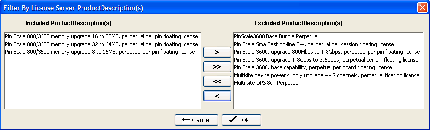

Filtering license data
Filtering enables you to display only the license data that you want to see.
About this task
You can filter the data based on any combination of the following parameters:
- customers
- license server host IDs
- order IDs
- product descriptions
- license expiration dates
Before you begin
All required files must be loaded and the Comparison Tool must have completed the comparison process.
Procedure
Results
The selected filter parameters are applied and the Comparison Tool shows only the license data that you want to see.
The filtering parameters remain applied until you exit the tool or click .
Example
